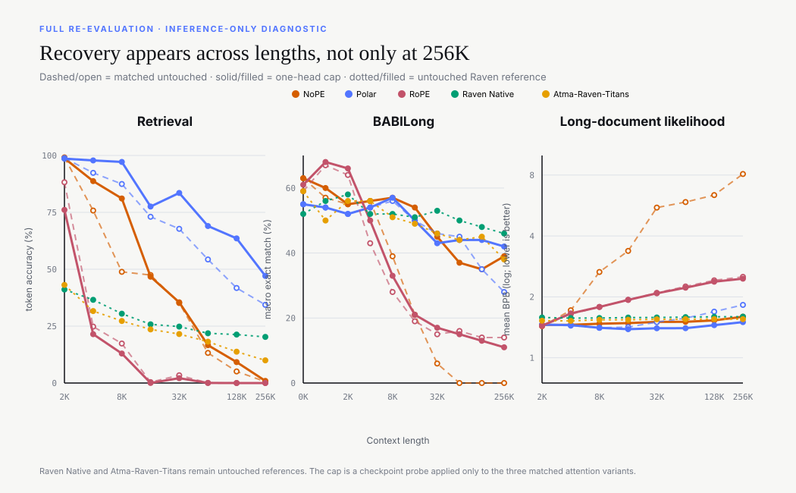

Research article · under review
ATMA: Long-Context Language Modeling via Polar Attention and Gated-Delta Compression Memory
What happens when we judge a long-context model by retrieval, document likelihood, short-context quality, reasoning, and serving—rather than one flattering score?
TL;DR
- We introduce ATMA, a 378M-parameter hybrid language model that combines Polar Attention with gated-delta recurrent memory.
- Across a complete 120-cell recipe sweep, memory improves Polar’s teacher-forced 64K retrieval score in all 20 matched cells, by 47.8 percentage points on average.
- After matched 9.816B-token pretraining at 2K, Polar retains 34.4% target-token accuracy at 256K, compared with 0.6% for NoPE and 0.0% for RoPE.
- The result has a hard boundary: Polar reaches 18.0% exact retrieval on synthetic 256K contexts but 0.0% on FinePDFs. This is retained signal, not solved real-text retrieval.
- There is no universal winner. Raven leads adapted BABILong and fixed-state decode; Polar leads retrieval and likelihood among the matched attention variants.
- A post-hoc audit finds single near-unit memory gates in NoPE and Polar. An inference-only cap on one head largely restores long-document likelihood and improves Polar retrieval, while RoPE does not recover. This diagnoses a checkpoint failure; it is not a new trained method.

1. Introduction
Long-context language modeling is often compressed into a single retrieval curve. That curve matters, but it is not the whole problem. A useful model must preserve relevant information as context grows without giving up document likelihood, ordinary short-context quality, reasoning performance, or practical inference cost.
These objectives compete. Full attention preserves direct access to tokens, but its compute and cache grow with sequence length and its probability mass can disperse over more keys. Recurrent models keep fixed-size state, but that state must compress the past and can lose detail. We therefore treat long-context modeling as a Pareto problem: an architecture is an operating point on a multi-objective frontier, not a winner by one number.
The problem with more keys
Standard softmax attention normalizes over every available key. As the sequence grows, irrelevant scores create a larger noise field. Positional schemes such as RoPE change how order enters the score, but they do not by themselves separate the direction of the retrieved value from the amount of evidence that participated in the match.
That distinction motivates Polar Attention. We want one channel to represent what matched, without its norm growing simply because more keys were present, and another bounded channel to express how much matched.
Our approach
ATMA is a 16-layer decoder that repeats Local → Local → Global → Local four times: 12 gated-convolution layers and four global attention layers at blocks 3, 7, 11, and 15. The global layers use Polar Attention and also maintain gated-delta recurrent memory. The attention path can still read the full context; the recurrent path supplies a compressed history whose state size does not grow with the sequence.
We test this in two stages. First, a complete factorial sweep chooses the recipe across attention type, regularization, distractor alignment, memory, and local training windows. Second, matched NoPE, RoPE, and Polar models are trained for 9.816B tokens and evaluated from their 2K training length through 256K.
2. Architecture
The matched attention models contain 378.16–378.22M parameters and share hidden size, heads, tokenizer, data order, optimizer, schedule, and token budget. Only the attention core changes. This keeps the main comparison narrow enough to interpret.
Polar Attention
Polar Attention decomposes its output into a normalized direction and a bounded magnitude. The direction aggregates values and removes radial scale. The magnitude is derived from an effective participation ratio, then passed through an extreme-value-aware null sink and a bounded map. In plain language: the model records what the matching values point toward separately from how convincing the match appears to be.
This is a channel decomposition, not an independence claim. Changing the match set can still rotate the direction. The design instead prevents the raw number of participating keys from directly controlling output norm.

Gated-delta compression memory
Each global layer also updates a recurrent key-value state. A learned sigmoid retention gate controls what remains; a delta update writes new information; a zero-initialized projection adds the retrieved memory back to the attention output. Unit-normalized keys control the update geometry. The sigmoid keeps each gate below one, but does not guarantee a useful fixed margin from one—an important distinction exposed by the checkpoint audit below.
3. Experimental design
The experiment is deliberately divided into recipe selection and matched comparison. Mixing these two stages would overstate what the ablation proves.
120-cell factorial
All 3 × 5 × 2 × 2 × 2 combinations receive roughly 1B FineWeb-Edu tokens at length 2K. These are distinct recipe cells, not seed replicates.
Matched pretraining
NoPE, RoPE, and Polar receive 9.816B tokens at length 2K in the same L40S environment and are evaluated through 256K.
The evaluation contains 24,000 paired retrieval trials over synthetic and FinePDFs haystacks, eight context lengths, three needle depths, and 50 trials per cell. We additionally measure BABILong after adaptation, fixed-target bits per byte, eight short-context tasks, and single-sequence serving on one L40S.
4. Results
Memory consistently helps Polar in the factorial
At 64K, adding memory improves Polar in all 20 matched combinations of regularizer, distractor setting, and window setting. The mean gain is 47.8 percentage points. The corresponding effect on NoPE is small and heterogeneous, while RoPE remains at zero.
A local training window reduces Polar with memory by 25.5 points on average. Distractor alignment also has a smaller, nonuniform negative effect. We therefore promote full-context Polar with memory, without a local window or distractor alignment.
Browse every Stage I cell and validation trajectory in the interactive dashboard →
Polar retains more target signal at 256K
After matched training, NoPE and Polar both approach perfect teacher-forced target-token accuracy at 2K. Their extrapolation is different. At 256K, Polar retains 34.4% averaged across tasks, haystack suites, and depths; NoPE retains 0.6% and RoPE 0.0%.
| Comparison | Model | Token @2K | Token @256K | Exact @256K | BABILong @256K | BPB @256K |
|---|---|---|---|---|---|---|
| Matched | NoPE | 99.2% | 0.6% | 0.0% | 0% | 8.097 |
| Matched | Polar | 98.9% | 34.4% | 9.0% | 28% | 1.825 |
| Matched | RoPE | 88.2% | 0.0% | 0.0% | 14% | 2.512 |
| Separately optimized recurrent family | ||||||
| Raven / AdamW | Atma-Raven-Titans | 43.1% | 10.0% | 0.0% | 38% | 1.551 |
| Raven / AdamW | Raven Native | 41.1% | 20.3% | 0.0% | 46% | 1.597 |
Where retrieval fails
The aggregate masks the most important boundary in the result. At 256K, Polar retains 68.4% target-token accuracy on synthetic haystacks, but only 0.3% on FinePDFs. Exact five-token accuracy is 18.0% on synthetic contexts and zero on FinePDFs.
target-token accuracy
18.0% exacttarget-token accuracy
0.0% exact5. The multi-objective frontier
Polar improves retrieval and long-document likelihood among the matched attention models, but it pays elsewhere. Its mean accuracy over eight 2K controls is 43.29%, compared with 45.15% for NoPE. At 128K, Polar attention decodes at 16.3 ms/token on one L40S; Atma-Raven-Titans records 2.27 ms/token with fixed recurrent state.
Raven Native reaches 46% BABILong at 256K and keeps likelihood nearly flat. Because Raven changes both model family and optimizer, it is not an attention ablation. It represents another practical point on the frontier: stronger adapted reasoning and cheaper decode, with lower direct retrieval.

There is no single “long-context score.” Retrieval, likelihood, adapted reasoning, short-context quality, memory growth, and latency answer different questions.
6. From checkpoint variability to a retention mechanism
The audit began with a mismatch: three NoPE checkpoints ended at almost the same 2K validation loss, yet differed by 6.70 nats at 256K. The runs were not seed-paired or randomized across devices, so this establishes checkpoint variability—not a hardware effect.
Parameter inspection found isolated near-unit gates
For every recurrent layer and memory head, we evaluated the learned zero-input gate γ0 and converted it to a half-life. The memory branch has eight independently learned head rows, even though attention uses two KV heads. One NoPE head implied a 21.01-million-token half-life and one Polar head 3.07 million. The earlier L4 NoPE control peaked at 185 tokens; Atma-Raven-Titans peaked at 41.
| Checkpoint | Largest head | Zero-input half-life | Role |
|---|---|---|---|
| NoPE · L4 mbs4 | block 2 / head 7 | 185 | Earlier control |
| NoPE · L40S mbs4 | block 2 / head 2 | 1.38M | Microbatch control |
| NoPE · L40S mbs16 | block 2 / head 5 | 21.01M | Promoted checkpoint |
| Polar · L40S mbs16 | block 2 / head 6 | 3.07M | Promoted checkpoint |
| RoPE · L40S mbs16 | block 2 / head 1 | 682 | Negative control |
| Atma-Raven-Titans | block 2 / head 3 | 41 | Recurrent reference |
This is a parameter-only operating point, not a runtime trace: the nonzero input weights make γ activation-dependent. But the same extreme heads survive BABILong fine-tuning almost unchanged, which made them concrete intervention targets.
A one-head runtime cap tests the mechanism
We capped only the final runtime gate logit of the largest head so its half-life could not exceed 256 tokens (γ ≤ 0.997296). The hook changes no checkpoint tensor, leaves attention untouched, and is removed after each condition. In the paired pilot, baseline and cap use the same loaded model, documents, needle examples, seeds, and attention backend. At 256K, NoPE clean NLL falls from 12.003 to 1.138 and Polar from 1.252 to 1.057. Polar needle cross-entropy falls from 2.39 to 1.71; RoPE changes only from 6.16 to 6.02 and loses short-range retrieval.
Full re-evaluation confirms selective recovery
We then ran all eight 2K downstream tasks, synthetic and FinePDFs retrieval, fixed-target BPB, and BABILong for NoPE, Polar, and RoPE. The clamped runs below are compared with pinned archived baselines; the paired pilot above supplies the controlled comparison. All 15 jobs completed without OOM.
{kind=link}

| Model | Downstream mean | BPB @256K | Retrieval @256K token / exact | BABILong @256K |
|---|---|---|---|---|
| NoPE | 45.15 → 45.10 | 8.097 → 1.595 | 0.60 / 0.00 → 0.93 / 0.00 | 0 → 39 |
| Polar | 43.29 → 43.25 | 1.825 → 1.501 | 34.37 / 9.00 → 47.07 / 16.33 | 28 → 42 |
| RoPE | 44.60 → 44.66 | 2.512 → 2.460 | 0.00 / 0.00 → 0.00 / 0.00 | 14 → 11 |
NoPE’s recovery is not confined to the endpoint. Its untouched BABILong curve falls from 21% at 16K to 6%, 0%, 0%, and 0% at 32K, 64K, 128K, and 256K; the capped checkpoint scores 54%, 45%, 37%, 35%, and 39%. Mean BPB changes from 3.374/5.527/5.885/6.369/8.097 to 1.484/1.504/1.506/1.530/1.595 over the same lengths. Exact retrieval still remains zero at 256K, so restored recurrent usability is not equivalent to restored direct lookup.
Polar gains 12.70 points in 256K target-token retrieval, 7.33 points in exact retrieval, and 14 points on BABILong; exact FinePDFs retrieval still remains zero. RoPE does not recover retrieval and loses three BABILong points at 256K. Ordinary downstream means move by at most 0.06 points. The paper appendix and diagnostic README report every task, dataset, depth, and length cell.
7. Limitations
- The study uses one model scale and one 2K pretraining regime.
- Stage I demonstrates robustness across nuisance-factor settings, not across random seeds.
- Polar has zero exact FinePDFs retrieval at 64K and 256K.
- Teacher-forced retrieval is not autoregressive generation.
- Raven is a separately optimized family comparison, not an optimizer-matched ablation.
- Serving measurements are single-sequence measurements on one L40S and should be treated as descriptive.
- The retention cap diagnoses existing checkpoints. It neither identifies the outlier’s training origin nor validates a bounded-gate training formulation.
- The broad clamped re-evaluation uses pinned archived baselines; strict same-process causality comes from the smaller paired sweep.
Conclusion
ATMA establishes a reproducible operating point for bounded full-context attention plus recurrent memory. Polar materially extends target-token signal, preserves exact synthetic retrieval, and stabilizes long-document likelihood. The result does not solve natural-text retrieval at extreme length, and it does not dominate recurrent alternatives on reasoning or serving.
The retention audit sharpens that lesson: a model can look converged at its training length while one near-unit recurrent gate silently creates a million-token timescale. A selective one-head intervention recovers NoPE likelihood and BABILong and improves Polar across likelihood, retrieval, and reasoning, but leaves other failures intact.
That mixed result is the point. Long-context systems should be compared as trade-offs, with metrics kept distinct, learned timescales audited, and failure boundaries made visible.
Open research artifact
Inspect the evidence
The dashboard exposes all 120 recipe cells, validation trajectories, grouped contrasts, Stage II endpoints, and the retention-horizon re-evaluation. The repository contains the complete parameter scan, paired sweep, clamp specifications, and per-suite logs.